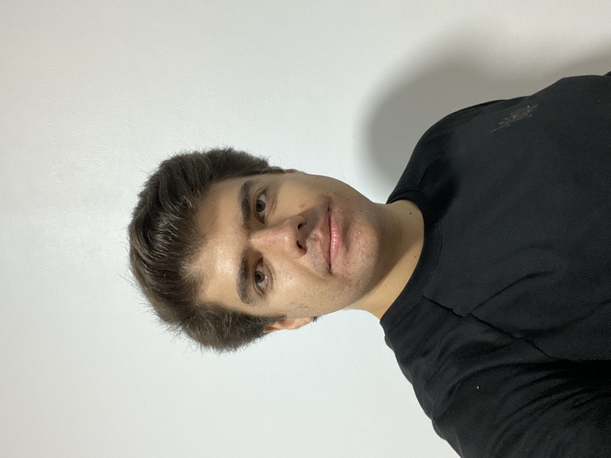

I'm Yavuz Selim Kara. I'm a computer engineering student at Istanbul Technical University. I'll be graduated in 2027. I am from Konya, and I stay in a dorm at the Ayazaga campus. I like playing table tennis, basketball, and volleyball.
Academic Interests
I was on a project team for 4 months in 2022-2023. I tried many parts of computer engineering, such as cyber security, web developing, AI, machine learning, etc. I participated in training programs organized by Cyber Security and ACM school student clubs. Shortly, I'm trying to develop myself. I noticed that I loved making algorithms and dealing with them. So, at this time, I think I'll continue with the machine learning and AI parts. However, this doesn't mean I won't make websites, games, or any other things. All areas of computer engineering are interesting to me.